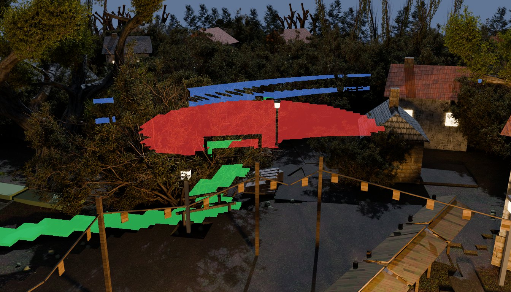
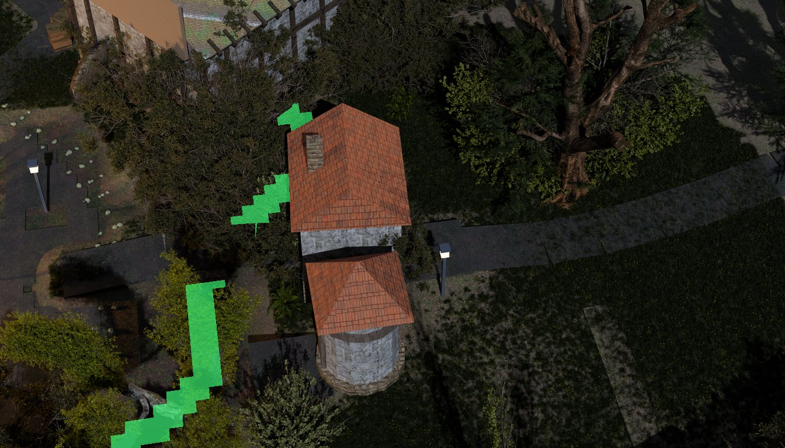
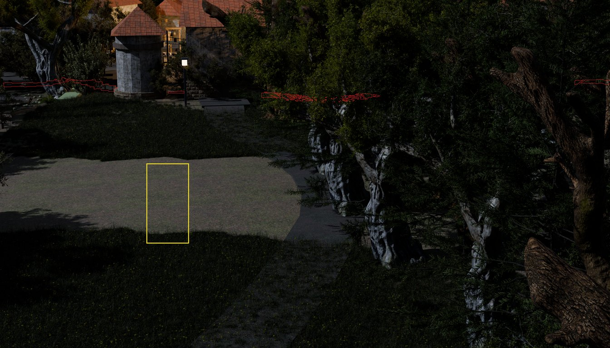
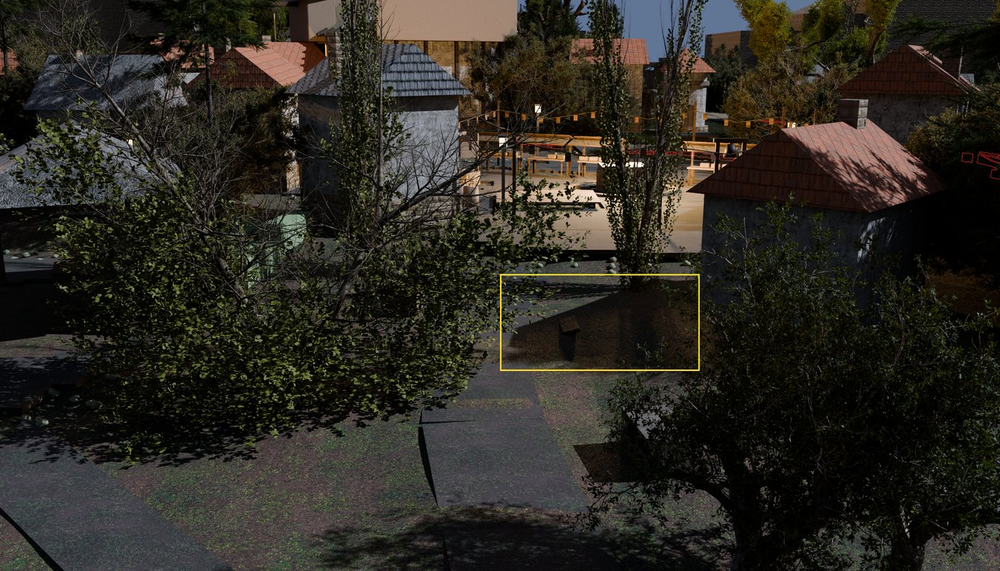
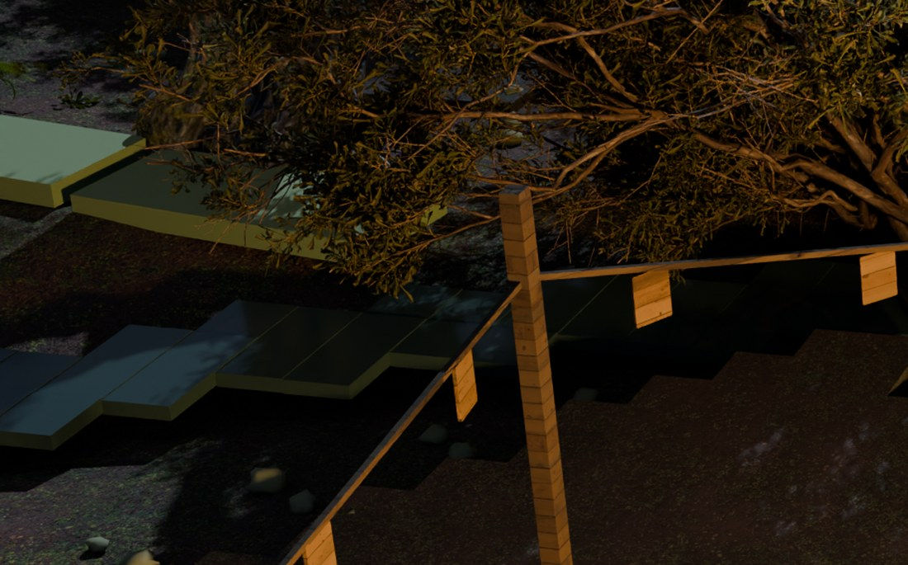
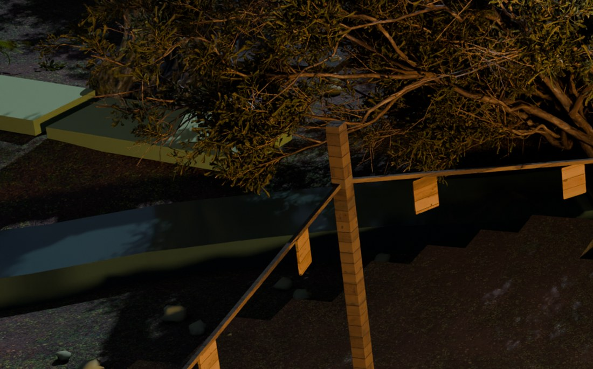
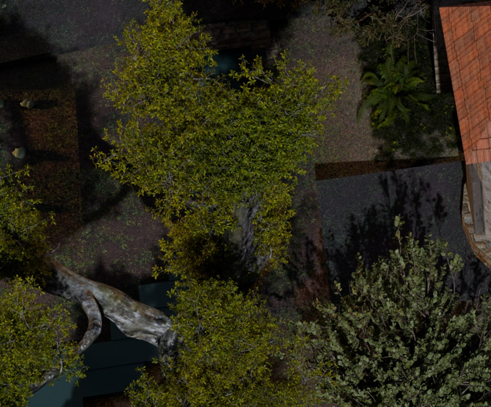
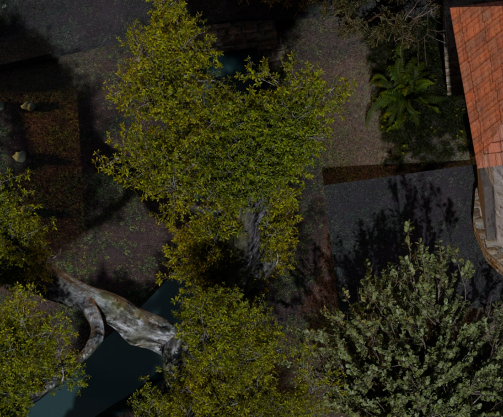
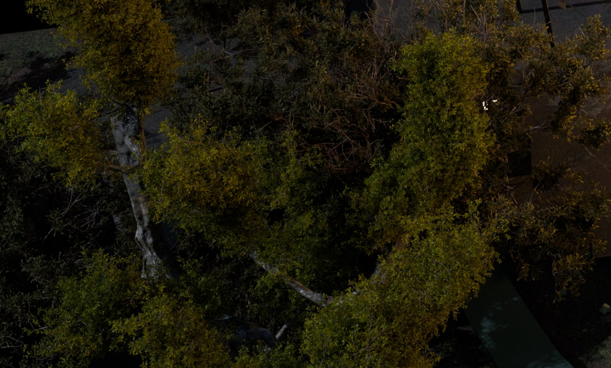

tools/emb_water_shader.py)Worklist item 1 of the round-3 slate in docs/qa/MORNING.md. The
standing complaint is the calibrated judge's quality:water-read family on the
Emberbrook checklist sweep (docs/qa/redteam/run-20260806-1/-2-emberbrook):
0 CONVINCING, 5 FAILING + 1 VISIBLE-BUT-ILLEGIBLE — the town's worst
standing visual class. BEFORE images are the plates as they stood on
2026-08-02 (committed under before/); AFTER images are the live
plates in /assets/scenes/emb-cine/. Serve repo /public and
/docs on one port to view.
pond landmark).
tools/emb_water_shader.py on
emberbrook-dressed.blend): five meshes wear emb_dress_water,
not the four the 09:45 census named — water_emb_pond (5,664 v),
water_emb_brook (3,000 v), water_emb_millpond (656 v),
water_emb_river (2,522 v after subdivision) and
emb_dress_wheelpit_water (375 v), the mill's own dug pit, which the
name-pattern census missed. None carried a Col layer; the material was one
flat Principled at base (0.045, 0.075, 0.062), roughness 0.09, Alpha a constant
0.90, bump 0.25. Dellhollow's ratified depth→alpha recipe
(docs/plans/water-transparency.md AS BUILT) had never been ported.emb-cine/scene.glb and again in the blend: on all three closed sheets the
n.z > +0.5 face group sits 0.12 m BELOW the
n.z < −0.5 group (pond 0.68 vs 0.80, brook 1.31 vs 1.43, millpond
4.08 vs 4.20). water_emb_river and emb_dress_wheelpit_water are
open single-sided sheets with only one group at all.
t2_water_shader's normal.z > 0.5 test — the ratified one —
would have painted the depth fade on the underside of three sheets and skipped the river
entirely, with every line it prints looking correct. The carrier finds the two
near-vertical groups and takes the higher mean z as the top; a sheet with one group is
open and all of it carries the fade.Emberbrook's water is 0.10–0.39 m deep at the median (per-vertex down-ray against a local BVH). Dellhollow normalises each sheet's ramp to its own median because its bathymetry is a flat slab 4–7.5 m down; carried here unexamined, that drives four of five sheets' median pixel to alpha 0.97. So the obvious adaptation was to read the ramp in true metres — leaving the whole town's water at alpha 0.10–0.45 — with the alpha floor lifted to 0.35 so the surface kept a specular lobe, plus roughness 0.09→0.16 and bump 0.25→0.45 to break the near-mirror that reflects unlit foliage.
tools/blind_pack.mjs) with no ownership
framing and no charge list, scored the change 2/10 against the untouched plate's
3/10 and preferred the untouched plate — both of them, for the same reason:
"the panels carry a cooler blue-black sheen that at least gestures at wet" and the change
"reads unambiguously as a paved or tiled surface, not water at all." Blender's Principled
blends the WHOLE shader against a Transparent BSDF, specular included, so at alpha
0.35 the only water cue the frame had was spent on a view of unlit brown mud.tools/emb_water_shader.py -- save, every default as written:
--scale median (the ratified normalisation), the ratified ramp 0.06 … 0.97,
and the shipped surface numbers untouched (roughness 0.09, bump 0.25, base
0.045/0.075/0.062) — the blind pair's verdict, honoured. The one thing that is not
Dellhollow's:
What the pass is still worth keeping: the diagnosed defect (zero
Col layers on all five sheets) is closed, the bake is idempotent and
invertible, and any later geometry or lighting fix inherits a correct per-vertex depth
attribute instead of having to discover this again.
depth.png put water on 8 of 11 cameras. A BEFORE/AFTER draft render
with one variable changed says something different, and it is the one that counts:| camera | water by depth-census | pixels the water material actually moved | judge's water bbox | rebaked? |
|---|---|---|---|---|
| pondlane | 2.46% | 1.58% draft / 1.35% full plate | y 0.58–0.75 | YES |
| square | 0.29% | — | ABSENT (no water found) | YES |
| gateroad | 0.19% | 0.064% (371 px) | y 0.47–0.70 — the changed pixels are y 0.23–0.40 | no |
| arch | 0.08% | 0.015% (87 px) | y 0.55–0.61 — the changed pixels are y 0.19–0.20 | no |
| homerow | 0.11% | — | x 0–0.25, y 0–0.2 | no |
| therise | 0.05% | — | y 0.48–0.65 | no |
| northlane / gatefield / woodroad / waystone / orchard | 0.21% / 0.03% / 0 / 0 / 0 | — | no water-read item | no |
The census–render gap is foliage: cine_bake's depth pass does not record the alpha-cut leaf cards that stand in front of the brook in the beauty render, so a depth-map occlusion test calls water visible where the picture shows a tree. An instrument calibrated on one pass cannot be trusted about another.
FAILING verdicts
are the quality:water-read family finding a dark region and blaming water for
it. No water shader can move them; they belong to the crushed-black-shadow item
(round 3, item 4). The water class was one real plate and several misattributions.pondlane, both depth maps decoded through the plate's
own near/far (9.79 … 146.92 m): 14,308 of 1,032,192 pixels differ and every one of them
by less than 0.001 m — 1-LSB quantisation, not a moved surface. square: 4
pixels, max channel delta 3. Note the trap: a raw byte compare says "changed" and a raw
channel delta says "255", and both are the blue channel's last bit. Compare depth in
metres or do not compare it.

cine_test --town emberbrook — 477 ok / 3 failed / 2 soft both
before and after this lane; all three reds pre-existing (cinematic-vs-explore bundle walk
parity 218 vs 222; square charPxFar 37 against a 38 floor; pondlane
visibleFrac 39%). Full receipts, with instruments, in docs/qa/DAYLOG.md
(2026-08-07, round 3 item 1).
tools/emb_brookchop.py)The pass above closed the shader question with a receipted null and named two next classes: the slabs are geometry and the black plane is lighting. This round measured both. The first is true and is fixed. The second is refuted as stated, and the measurement that refutes it is the most useful thing on this page.
Instrument (no Blender, no browser, ~3 s): tools/glb_read.mjs
over the shipped collision bundle emb-cine/scene.glb, every water triangle
projected into the camera's own solved frustum and agreed against that plate's own
depth.png decoded to metres (tolerance 0.30 m).
| plate | pond | brook | millpond | river | total visible water |
|---|---|---|---|---|---|
| pondlane | 5.505% | 2.796% | – | 1.421% | 9.72% |
| northlane | – | 2.171% | – | – | 2.17% |
| square | 0.219% | 1.950% | – | – | 2.17% |
| homerow | – | 0.689% | 0.175% | – | 0.86% |
| gateroad | – | 0.461% | – | – | 0.46% |
| therise | 0.016% | 0.061% | – | 0.059% | 0.14% |
| arch | 0.058% | 0.050% | – | 0.024% | 0.13% |
veg_emb_wood_13_trunks/crownA/crownG across 100% of
them and searsia_burchellii_*/searsia_lucida_* across 46-100%.
The town's namesake water is not in the town's pond camera.

quality:water-read family is pointing at ground| plate | verdict | overlap of the judge's own bbox with real water | what those pixels are (owner probe) |
|---|---|---|---|
| arch | FAILING | 0 px (0.0%) | shadow gaps between plank/paving slabs |
| therise | FAILING | 0 px (0.0%) | emb_ground_valley 86.8% + walk edges — a grass slope |
| gateroad | FAILING | 0 px (0.0%) | a pale gravel apron, L p50 0.263 against a frame p50 of 0.047 |
| homerow | FAILING | 363 px (0.7% of bbox) | spring-house stone in shadow |
| pondlane | FAILING | 11,304 px (16.9% of bbox) | mostly ground; the brook clips one corner |


Every up-facing water triangle's centroid against the highest non-water surface directly under it (same bundle, point-in-triangle).
| sheet | up faces | surface above its own bed: min / p10 / p50 / p90 / max |
|---|---|---|
| water_emb_brook | 750 | -0.016 / 0.208 / 0.287 / 0.420 / 5.745 m |
| water_emb_pond | 1416 | -0.020 / 0.054 / 0.233 / 0.772 / 4.955 m |
| water_emb_millpond | 164 | 1.795 / 1.855 / 2.037 / 2.182 / 2.299 m |
water_field() builds every body as INDEPENDENT 0.55 m cells,
each a box 0.12 m thick. A surface 0.29 m over its bed on a 0.12 m box is
0.17 m of air: a lit underside, four lit walls, and a shadow cast onto the bed the
water is meant to be lying in. That is the whole of "stacked mitred slabs" — and it is why
a shader moved 269 pixels. A material cannot close an air gap.A CARRIER, never a rebuild. Three steps, and the middle one asserts the
first: emb_water_shader -- revert save →
emb_brookchop -- save → emb_water_shader -- save.
emb_blockout.py's water_field carries the same seating (and a
segment-interpolated brook_level) so a future full rebuild agrees.
| sheet | verts / polys | bottom verts seated | wall height min/p50/max | boundary loop |
|---|---|---|---|---|
| water_emb_brook | 3000/2250 → 1190/1719 | 538 (3 capped) | 0.02 / 0.407 / 0.90 m | 241.06 → 187.24 m (-22.3%) |
| water_emb_pond | 5664/4248 → 1556/2901 | 630 (31 capped) | 0.02 / 0.305 / 0.90 m | 75.90 → 60.10 m (-20.8%) |
| water_emb_millpond | 656/492 → 214/352 | 70 (31 capped) | 0.02 / 0.129 / 0.90 m | 26.40 → 19.13 m (-27.5%) |
Boundary length is the honest metric for a lattice silhouette: a staircase
cut on a 0.55 m grid walks two legs of every triangle it could have walked one hypotenuse
of, so it is measurably LONGER than the curve it approximates. Converged at 6 iterations
(12 gives -22.5%). water_emb_river and emb_dress_wheelpit_water
are open sheets (one ring, no bottom): reported and skipped, they have no air gap.
--zsmooth 60 vs 0: risers
p90/max 0.023/0.083 → 0.024/0.093, distinct levels 376 → 514. It made the
surface ROUGHER. An earlier repair inside it was worse: lifting a smoothed vertex to
bed + 1 cm put 40 distinct levels across 0.80..0.86 into
water_emb_pond, which ships as ONE flat level — a bumpy pond manufactured
by a repair, on a sheet whose staircase was never the complaint.quality:frame-edge-world
WEAK, "the steps on the far left edge appear as untextured, flat green block meshes that
abruptly end the terrain geometry" — is lm_field_10_ridge14/15,
38.5% of that bbox (owner probe). They are the blockout's crop ridges, 3.0 x 1.1 x
0.22 m boxes in M_LEAF_G. emb_dress.py harvests every
lm_field_* into PLAN["fields"] and never reads it — one
.append, zero consumers — so the worked parcels, their hedges, their
drystone, their palings and their stooks all ship as raw gray massing. Not this lane's
class and it costs a full re-dress; named with its number so the dressing lane starts
from one.




Same protocol as the round-1 pair that REFUTED the shader adaptation:
tools/blind_pack.mjs, shuffled, re-encoded to strip every tell, no ownership
framing, no charge list, no mention of what changed. Two independent judges, each asked
only to score both frames and describe what they saw.
| the shipped plate | the seated water | would ship | |
|---|---|---|---|
| judge 1 (art director) | 6.0 / 10 | 7.5 / 10 | the seated water |
| judge 2 (environment artist) | 5.0 / 10 | 7.5 / 10 | the seated water |
lm_field_10_ridge14/15 from section 5. Judge 1 also names a "thin
black curved sliver jutting from the ground beside the tree trunk", unchanged in both
frames and not yet attributed.| pondlane, before → after | |
|---|---|
| pixels moving > 8/255 | 22,210 of 4,128,768 = 0.538% (the shader pass moved 0.0065% — this is 83x) |
| median luminance INSIDE the moved region | 0.0513 → 0.1014 |
| 5th-percentile luminance there | 0.0000 → 0.0185 |
| mean |luminance gradient| there | 0.00804 → 0.00647 (-20%: the rims) |
cine_test --town emberbrook — 477 ok / 3 failed / 2 soft, identical
before and after. All three reds pre-existing and pre-attributed: bundle walk parity
218 vs 222 (walk_e_square-plaza__barn_l0..l3) and square
charPxFar 37 against its own 38 floor.slice_test 776/0 · seam_walk --town emberbrook 10/10 ·
findability_test 69 passed / 0 failed / 12 warn — all unchanged.routes_derive --town emberbrook --check was STALE (since
a7be573, 2026-08-05, not this lane's edit) and is re-derived and committed
— nav-eval composites from routes, so a stale file is wrong scores.emb_dress_water (five, all listed in its receipt) and every sheet's
dz_max is 0.000 — no water top moved in z at all. The plan relaxation is
≤ 0.28 m, and the "water top 0-0.73 m over a tread" relation it could create already
holds at 177 sample pairs in the SHIPPED bundle (brook under the footbridge and at the
weir), so it is not a new class; WALKLOCK governs the tread in emb- scenes
regardless.scene_redteam --calibrate first, as its own header demands:
2/5 on the exact plate, 5/5 on any plate holding the object — in band, the judge has
not drifted (docs/qa/redteam/run-20260807-185607-calib/). Then checklist mode
on the rebaked plates (run-20260807-190224).
| plate | item | before | after | the bbox |
|---|---|---|---|---|
| northlane | frame-edge-world | CONVINCING | CONVINCING | no water item on its contract |
| pondlane | water-read | FAILING | FAILING | MOVED [0.22,0.58,0.6,0.75] → [0.5,0.4,0.8,0.7] |
frame-edge-world is still
WEAK but its SUBJECT also moved, from the lm_field block meshes at frame-left
to the tree line at top-left. At this N that is not separable from judge noise and is NOT
claimed as a win.tools/scene_redteam.mjs:477 decides whether a plate is asked
about its water:
const wets = WATER_FEATURES.map((l) => ({l, cs: census(cam, l.pos)}))
.filter((w) => w.cs.on && w.cs.state !== 'behind-camera')
quality:water-read whether or not
one pixel of that water survives the plate. That is why arch (0.13% water), therise (0.14%)
and gateroad (0.46%, none of it inside the drawn box) all carry a FAILING water verdict,
and why pondlane — whose pond is entirely behind a willow — carries one whose
box holds no brook. It is the same class as the Poppy defect CLAUDE.md already names: a
test that projects a coordinate has not asked whether anything is visible there.scene_redteam.mjs is the shared judge and another
lane is running against it in this window. Coordinator's call.The coordinator reassigned the arming fix once the Dellhollow lane closed.
quality:water-read now arms on measured visible water:
waterFracOf(cam) rasterises the scene bundle's own water surfaces through the
shipped projection into a 168×96 z-buffer and agrees every covered cell against the
plate's own depth.png — the same shape as the skyFracOf
precedent this file already had. The fraction is passed into the prompt:
"water covers about X% of this frame … judge ONLY those pixels … put the bbox on the water
itself". node tools/scene_redteam.mjs --town <t> --water-census prints it
for a whole town in ~2 s with no API.
| plate | water % | the verdict it had given | |
|---|---|---|---|
| dellhollow fishdock / waterfront / crossing / north-landing | 28.8 / 22.2 / 17.4 / 15.7 | ARMED | crossing CONVINCING |
| dellhollow lockfive / gate / boatyard / weave | 9.8 / 6.9 / 6.3 / 5.8 | ARMED | CONVINCING, WEAK, –, CONVINCING |
| dellhollow deep-stairs | 1.5 | ARMED | round-3 FAILING→WEAK |
| dellhollow quay-west | 0.00 | suppressed | FAILING: "No water surface is visible anywhere near the Harbor Deck" |
| emberbrook pondlane / gatefield / square / northlane / homerow | 9.24 / 2.36 / 2.20 / 2.13 / 0.96 | ARMED | |
| emberbrook gateroad / arch / therise | 0.45 / 0.12 / 0.11 | suppressed | all three FAILING, all three measured DISJOINT from every water pixel |
gatefield arms for the FIRST time — the point test failing in the
other direction. Tightest margin is gateroad 0.45% against homerow 0.96%, a 2x gap.pondlane water-read | northlane water-read | |
|---|---|---|
| old plate, old arming | FAILING | not asked |
| new plate, old arming | FAILING — bbox moved onto a gravel path, 0 water px | not asked |
| new plate, new arming | WEAK | CONVINCING |
quality:water-read CONVINCING
this town has ever had (the class opened 0 CONVINCING / 5 FAILING), its bbox is
43.5% brook — the judge is finally looking at the water it is judging —
and its words are about the geometry this round fixed: "clear transparency revealing
submerged ground rocks and forms convincing edge contacts with the surrounding terrain."